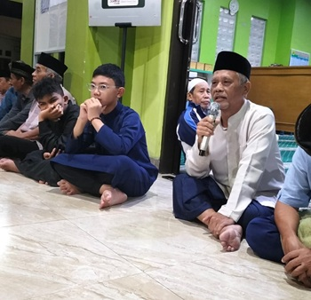

Selamat datang di portal resmi Masjid Al Hidayah. Berlokasi di Perumahan Harapan Jaya II, kami berkomitmen mewujudkan umat yang bertakwa, cerdas, berkemajuan, dan peduli sesama.
Pembaruan harian jadwal sholat fardhu yang disesuaikan secara dinamis dengan sistem penunjuk waktu sholat aktif.
Masjid Al Hidayah berdiri kokoh di tengah perumahan Harapan Jaya II, Bekasi Utara. Sebagai pusat syiar Islam, kami berupaya menciptakan ekosistem peribadahan yang nyaman serta menjadi pelopor kegiatan pemberdayaan umat dari lini sosial, keagamaan, hingga ekonomi syariah.
Jl Sungai Kapuas Blok F, RT 07 / RW 19, Perumahan Harapan Jaya II, Kel. Harapan Jaya, Kec. Bekasi Utara, Kota Bekasi 17124.
Penyediaan pojok baca serta bimbingan ibadah ramah anak.
Penyaluran dana sosial transparan setiap awal bulan.
Pendidikan tahfidz Qur'an dan akhlak bagi generasi muda.
Pengelolaan sampah mandiri dan efisiensi air wudhu daur ulang.
Ikuti program dakwah serta pembinaan rohani untuk meningkatkan iman dan takwa.
Mempelajari kaidah dasar bahasa Arab guna memahami bacaan sholat dan Al-Qur'an secara lebih mendalam.
Memahami hikmah serta kandungan ayat suci Al-Qur'an untuk diterapkan dalam akhlak sehari-hari.
Pembahasan matan hadits pokok dalam ajaran Islam yang disusun oleh Imam An-Nawawi.
Panduan penyucian jiwa, pengendalian hawa nafsu, serta menghidupkan adab mulia dalam bermasyarakat.
Pembahasan dasar-dasar keimanan yang lurus bersandarkan dalil naqli Al-Qur'an dan Sunnah.
Salurkan kepedulian Anda untuk pemeliharaan fasilitas, dakwah umat, serta sarana peribadahan Masjid Al Hidayah. Setiap rupiah yang disedekahkan berpotensi melipatgandakan amal jariyah Anda.
Laporan transparan pembangunan kubah masjid & renovasi lantai 2.
Silakan isi form ini untuk mencoba fitur simulasi pencatatan donasi real-time.
إِنَّمَا الأَعْمَالُ بِالنِّيَّاتِ
"Sesungguhnya setiap amalan itu bergantung pada niatnya."(HR. Bukhari dan Muslim)
Dokumentasi fisik bangunan masjid, kenyamanan ibadah, dan pelaksanaan program ukhuwah.

Dilengkapi AC pendingin udara penuh serta alas karpet tebal berkualitas.

Berisi kitab-kitab referensi keagamaan untuk menambah wawasan jamaah.

Masjid Al Hidayah menyelenggarakan berbagai perayaan hari besar keagamaan dengan penuh kebersamaan.

Masjid Al Hidayah menyelenggarakan berbagai kegiatan musyawarah untuk mendengarkan aspirasi dan saran dari jamaah.
Hubungi sekretariat atau kunjungi kami langsung di komplek Harapan Jaya II Bekasi.
Berikut adalah lokasi presisi Masjid Al Hidayah di Harapan Jaya II Bekasi Utara. Silakan gunakan peta interaktif di bawah untuk menuntun navigasi rute perjalanan Anda.
Punya keraguan terhadap suatu informasi atau isu (Tabayyun)? Atau ingin memberikan ide usulan serta bermusyawarah demi kemakmuran Masjid Al Hidayah? Sampaikan pesan Anda di bawah ini.